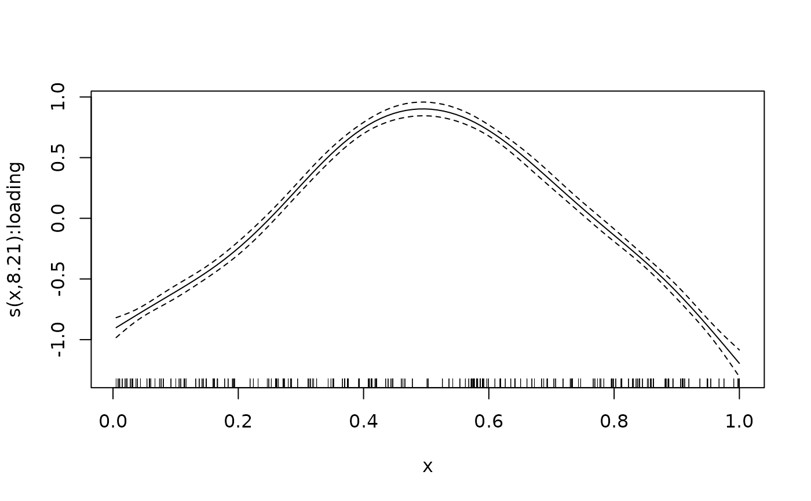
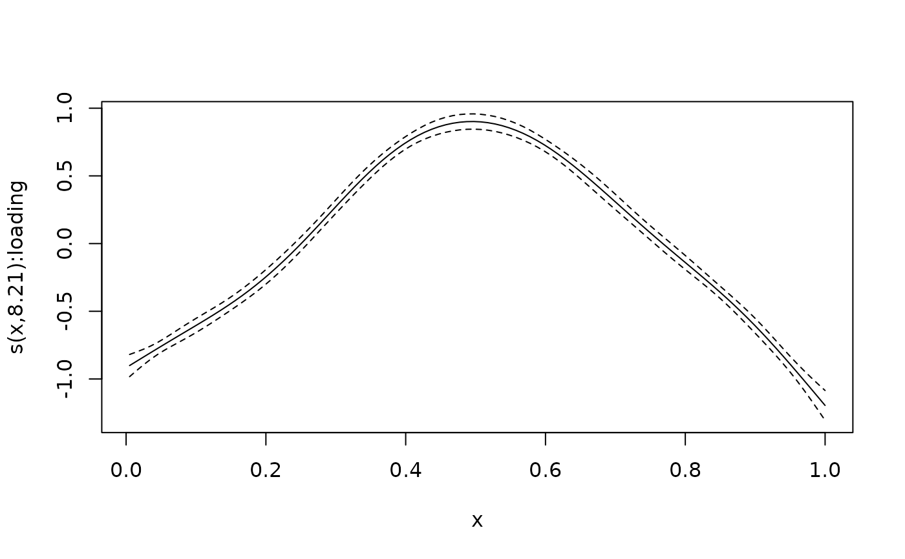

Plots smooth terms of a fitted galamm object. This function is a thin
wrapper around mgcv::plot.gam
(Wood 2017)
.
Arguments
- object
Object of class
galammreturned fromgalamm.- ...
Other optional arguments, passed on to
mgcv::plot.gam.
References
Wood SN (2017). Generalized Additive Models: An Introduction with R, 2 edition. Chapman and Hall/CRC.
See also
Other summary functions:
anova.galamm(),
plot.galamm(),
print.summary.galamm(),
summary.galamm()
Examples
# Generalized additive mixed model with factor structures -------------------
# The cognition dataset contains simulated measurements of three latent
# time-dependent processes, corresponding to individuals' abilities in
# cognitive domains. We focus here on the first domain, and take a single
# random timepoint per person:
dat <- subset(cognition, domain == 1)
dat <- split(dat, f = dat$id)
dat <- lapply(dat, function(x) x[x$timepoint %in% sample(x$timepoint, 1), ])
dat <- do.call(rbind, dat)
dat$item <- factor(dat$item)
# At each timepoint there are three items measuring ability in the cognitive
# domain. We fix the factor loading for the first measurement to one, and
# estimate the remaining two. This is specified in the loading matrix.
loading_matrix <- matrix(c(1, NA, NA), ncol = 1)
# We can now estimate the model.
mod <- galamm(
formula = y ~ 0 + item + sl(x, factor = "loading") +
(0 + loading | id),
data = dat,
load.var = "item",
lambda = list(loading_matrix),
factor = list("loading")
)
# We can plot the estimated smooth term
plot_smooth(mod, shade = TRUE)

# We can turn off the rug at the bottom
plot_smooth(mod, shade = TRUE, rug = FALSE)
